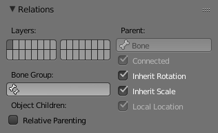

Relations 关系¶

关系面板。
在这个面板中，您可以安排骨骼在不同层，以便于操作。
Bone Layers 层¶
参考
模式: Object, Edit and Pose Mode
面板:
Moving Bones between Layers¶
显然，你必须在 编辑模式 或 姿态模式 来移动层之间的骨骼。请注意，与物体一样，骨骼可以放置到几个层中，只需使用通常的 Shift-LMB 点击...首先，你必须选择所选定的骨骼！
- 在属性编辑器中，使用每个选定的骨骼关系面板（骨骼 标签）中的“图层按钮”来控制它所在的图层。
- 在 3D View 编辑器中，使用菜单 或 或按
M显示弹出通常的图层菜单。请注意，这样，你可以将相同的图层分配给所有选定的骨骼。

Parenting 父子¶
- Parent 父级
- 数据ID 选择要设为父级的骨骼。
- Connected 相连项
- 相连项（Connected） 复选框设置要与其父级首端连接的骨骼。
Transformations 变换¶
骨骼关系对变换行为的影响。
默认情况下，子骨骼继承:
- 其父位置与自身的偏移量。
- 其父旋转的角度 （即他们保持恒定旋转相对于其父级）。
- 其父缩放，与自身偏移量。

骨架在它的重置位置。 |

首端骨的旋转。 |

首端骨骼的缩放。 |
就像标准的子对象。你可以 骨骼 标签的关系面板在前面的骨骼的基础上修改此行为:
在姿态模式的关系面板。
- Inherit Rotation 继承旋转
- 禁用时，这将“破坏”与骨骼的父级的旋转关系。这意味着当它的父级旋转时，子级将在骨架对象空间中保持旋转。
- Inherit Scale 继承缩放
- 当被禁用时，这将“破坏”与骨骼的父级的缩放关系。
这些继承行为沿骨骼层次传播。 所以当你缩小骨骼时，它的所有后代子级按默认值相应缩小。但是，如果在此“系列”中设置了一个骨骼的 继承缩放 或 继承旋转 属性，这将打破缩放传播， 当你缩小它的祖先（父级）时，这个骨骼 和它所有的后代（所有的子级） 将不再受到影响。

在骨架的黄色轮廓骨骼禁用继承旋转。 |

禁用继承旋转的骨骼子级骨骼的旋转。 |

禁用继承旋转的骨骼子级骨骼的缩放。 |
连接的骨骼有另一个特点：它们不能被转换。事实上，由于它们的首端必须是父级的尾端，如果你不移动父级，你就不能移动子级的首端，而只能移动子级的尾端，导致子级的旋转。这究竟是个什么情况，当你按： G 与连接骨选择时，Blender自动切换到旋转操作。
骨骼关系也对多个骨骼的选择在变换时的行为有重要的影响。然而，有许多不同的情况可能不包括在这个名单上，这应该给出一个好主意的问题：
- 通常，不相关的骨骼被独立转化。

缩放其中一些相关骨骼。
- 当选择同一个“家庭”的几个骨骼被选择时，只有“最多父级”才被真正的转化 - 子级只是通过父子关系过程来处理，好像没有被选中那样（见图 缩放其中一些相关骨骼。 是黄色轮廓的第三个尾端骨，只是通过父子关系缩小，与未选择的关系完全相同，即使它被选中和活动，否则应该是缩小两次！）。
- 当选择了连接和未连接的骨骼，并且您开始移动操作时，只有未连接的骨骼受到影响。
- 当子级连接链骨骼选择时，"最多父级"选择的那个是链接的，当你按
G，什么都没发生，因为Blender仍然在移动操作，这当然对连接的骨骼没有影响。
所以，当摆动一个骨骼链，你应该经常编辑它的元素从首端到尾端。这个过程被称为 正向运动学 （FK）。我们将在 later page Blender具有另一种姿态方法，称为 反向运动学 (IK),这可以让你通过移动其尾端来摆动整个链。
Note
此功能有些工具扩展/完成 pose library 。